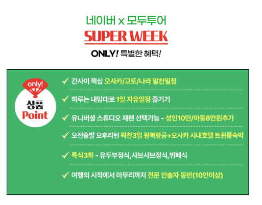
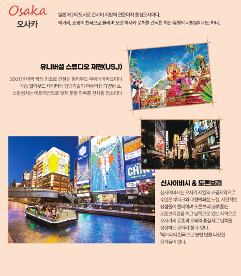
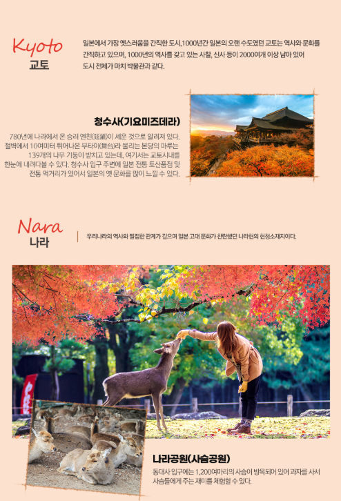

1. 오사카·교토·나라를 한 번에
짧은 2박3일 일정 안에서 오사카뿐 아니라 교토와 나라까지 함께 살펴볼 수 있도록 구성된 상품입니다. 일본 간사이 지역을 처음 방문하거나 여러 도시를 한 번에 경험하고 싶은 경우 비교해보기 좋습니다.

2. 하루는 자유롭게 보내는 일정
상품명에는 1일 자유일정이 포함된 것으로 안내되어 있습니다. 패키지의 편리함을 이용하면서도 하루 정도는 쇼핑, 맛집, 카페, 개인 관광 등 원하는 방식으로 시간을 보내고 싶은 분에게 장점이 될 수 있습니다.

3. 3대 특식과 USJ 선택 가능
상품명 기준 3대 특식이 포함되어 있으며 유니버설 스튜디오 재팬(USJ)은 선택 가능한 일정으로 표시되어 있습니다. USJ를 이용하려는 경우 입장권 포함 여부와 이동 방식, 자유시간 범위를 예약 전에 확인하는 것이 좋습니다.

4. 짧은 일정일수록 이동시간 확인
2박3일 상품은 항공 시간에 따라 실제 현지 체류시간 차이가 크게 날 수 있습니다. 출발·도착 시각과 공항에서 시내까지의 이동시간, 도시 간 이동 동선을 함께 살펴보면 실제 관광 가능 시간을 판단하기 쉽습니다.

5. 예약 전 확인할 조건
호텔 위치와 객실 조건, 식사 포함 횟수, 자유일정 범위, USJ 선택 시 추가비용, 가이드 경비, 쇼핑 일정, 수하물과 취소·환불 조건 등을 최종 상품 페이지에서 확인하세요.
오사카 교토 나라 패키지 2박3일 상품 확인하기
출발일, 가격, 항공편, 숙소와 포함·불포함 조건은 판매 페이지에서 최종 확인하세요.
여행 상품 자세히 보기 →오사카 교토 나라 패키지 2박3일 FAQ
오사카 교토 나라 패키지는 몇 박인가요?
이 페이지에서 소개하는 상품은 2박3일 일정으로 정리했습니다.
자유일정이 포함되어 있나요?
상품명 기준 하루 자유일정이 포함되어 있습니다.
USJ는 필수 일정인가요?
상품명에는 USJ 선택 가능으로 안내되어 있습니다. 실제 선택 방식과 비용은 예약 페이지에서 확인하세요.
교토와 나라도 함께 가나요?
상품명에 오사카·교토·나라 일정이 함께 표시되어 있습니다.